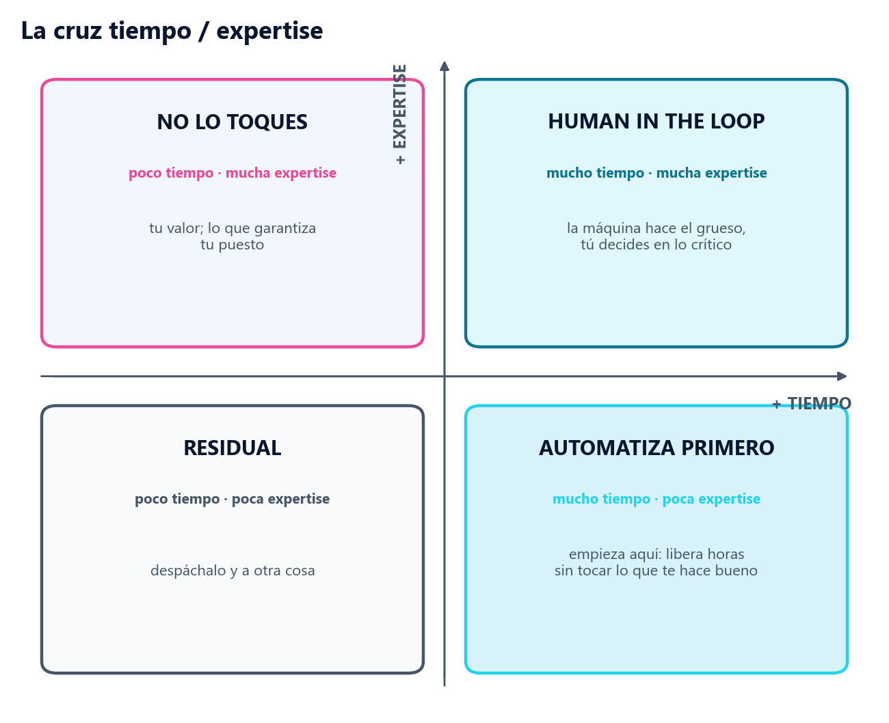

[ EL VAULT DE IA · edrian.exe ]
La introducción a la IA que no caduca cuando sale el próximo modelo.
De Turing a tu portátil: la historia, cómo funciona por dentro, y el criterio para usarla sin que te la cuele nadie. El manual que le daría a alguien que empieza hoy.
Precio de lanzamiento · pago único
29 páginas ilustradas · índice · 6 diagramas · +40 prompts · bonus de copia-pega · descarga inmediata · garantía
// quién lo escribe
Soy Adrián Nicieza — edrian.exe. Coordino una acería a jornada completa, doy formación de IA a empresas y a organismos públicos, y casi un millón de personas siguen mi trabajo. He colaborado con:
// el problema
Con la IA solo hay dos maneras de perder.
El informe de MIT de 2025 fue claro: alrededor del 95% de los proyectos de IA en empresas no devuelve nada. Y no por culpa de la herramienta — porque se suelta sin contexto ni criterio. Eso es exactamente lo que vas a aprender a tener.
// para qué te sirve
Cuando lo termines, vas a saber:
- Leer cualquier noticia de IA y separar lo que importa del humo.
- Decidir qué tareas tuyas automatizar primero — y cuáles no tocar nunca.
- Hablarle a un modelo para sacarle algo que no sea el promedio de internet.
- Montar tu primer flujo que te ahorre horas, esta misma semana.
- Cambiar de herramienta cuando salga una mejor, sin empezar de cero.
// qué hay dentro
Doce partes, de la teoría a tu primer flujo. Con índice e ilustrado.
➕ Bonus incluido: los más de cuarenta prompts en un archivo aparte, listos para copiar y pegar. Sin teclear de más.
// un vistazo dentro
No te lo cuento. Te lo enseño.

// ¿es para ti?
Te lo digo claro, antes de que pagues.
Sí, si…
- Ya usas la IA pero sientes que le sacas el 20%.
- No quieres trucos sueltos, quieres entenderla.
- Te fías más de quien te dice lo que NO funciona que de quien promete magia.
- Creas, negocias o decides, y quieres ir más rápido sin perder criterio.
No, si…
- Buscas el botón mágico que lo hace todo por ti. No existe.
- Quieres "500 prompts" para no abrir ninguno.
- Esperas un ladrillo de 40 horas. Esto se lee en una tarde y se usa.
// el precio
29 €. Una vez. Actualizaciones incluidas.
Un curso de IA cuesta entre 300 y 1.000 €, y la mitad estará caduco en un trimestre. Esto es menos que una hora de mi formación, pago único, y las actualizaciones van dentro — porque el panorama cambia y lo sé.
Es precio de lanzamiento. Sube a 39 € cuando el lanzamiento termine. Sin cronómetros de mentira: el día que suba, lo verás aquí.
El riesgo lo asumo yo: ábrelo, úsalo una semana, y si no te ha hecho mejor con la IA me escribes a contacto@edrianexe.com y te devuelvo el dinero. Sin preguntas raras.
// dudas
Las preguntas que me harías.
¿En qué se diferencia del pack gratuito?
El gratuito (El Stack de IA) son 27 prompts para abrir boca. El Vault es el manual entero: la historia, cómo funciona por dentro, la obsolescencia artificial, la cruz de flujos, qué meter en producción, las técnicas con respaldo, la biblioteca completa y casos reales. El gratuito te da prompts; esto te da el criterio para que no dependas de ellos.
¿No se quedará desactualizado en unos meses?
Parte sí, y te lo aviso en la primera página del libro. Por eso las actualizaciones van incluidas. Y lo que de verdad te llevas —la historia, cómo funciona y el criterio— es justo lo que no caduca cuando sale el próximo modelo.
¿Sirve con ChatGPT, Claude, Gemini…?
Con todos. Lo que enseña es agnóstico: funciona con cualquier asistente de IA decente, el de hoy y el de dentro de un año.
¿Es para principiantes o avanzados?
Para ambos. Si empiezas, la historia y los principios te dan una base que no se cae. Si ya vas servido, los bloques de verificación, negociación y meta-prompts te suben el nivel.
¿Cuánto tarda en leerse?
Una tarde. Es un manual para usar, no un ladrillo para que se llene de polvo en la estantería.
La IA no te hace más listo.
Te hace más rápido. Aprovéchalo.
Empieza por entenderla. El resto viene solo.
Quiero el Vault — 29 € →¿Aún con dudas? Escríbeme a contacto@edrianexe.com y te digo si es para ti. Si no lo es, te lo diré.